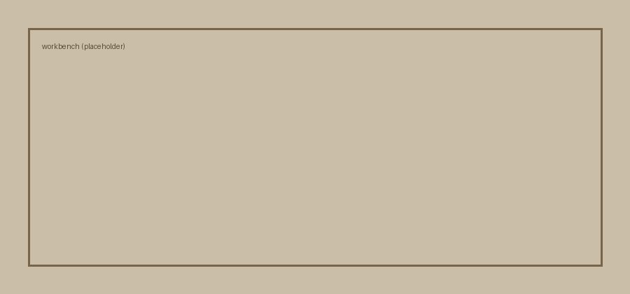

Engineering
1 June 2026
On Building Things That Last
A reflection on permanence, craft, and what it means to make something worth keeping.
When I solder a joint or commit a function, I am making a small bet about the future — that someone, maybe me, will return to it and find it still standing.
Craft as memory
Good engineering is memory made physical. A well-named variable is a note to your future self; a tidy schematic is a letter to whoever opens the enclosure next.
The best code is the code you never have to think about again.
A few things I try to keep in mind:
- Make the common case obvious.
- Leave the edges documented.
- Prefer boring tools that will still exist in ten years.

That's the whole craft, really: leaving things a little better set in order than you found them.